8. Assembly¶
8.1. Introduction¶
This document describes the procedure for assembly of the three subunits; Optics Assembly, Detector Assembly, and Control Assembly that will become one unit of the DMS ready for installation. Objective is to build a single item ready as a simple retro-fit to fluid dispensers already in field use.
8.2. Optics Assembly¶
For this sub-assembly, you will need the items as listed in Table 8.1 and the associated referenced tools or supplies. In general, the items are listed in the order they will be assembled. More complete details on each item, such as part number, vendor etc., is located in the master BOM maintained here 7818-Droplet SVN\trunk\Documents\7819 DMS Master BOM.xls, and it can be downloaded here (for viewing only).
| Quantity | Description | Tools and Supplies |
|---|---|---|
| 1 | Optics Spine | |
| 1 | 1/2” Square Aluminum Mirror | Loctite 430 Instant Adhesive |
| 4 | Dowel Pin .0625 x .375 | Tweezers and Loctite 430 |
| 1 | X-Y-Z Mount | |
| 1 | Optics Sub-assembly Mount | |
| 2 | 1/8 x 1/4 Alloy Dowel Pin | Loctite 430 |
| 1 | Collimating Mirror | 5-minute epoxy |
| 1 | Housing Window | 5-minute epoxy |
| 1 | Optics Housing Cover | |
| 2 | Flat Head Cap Screws .112-40 x .5625 | 1/16 Hex Driver |
| 1 | X-Y-Z Adaptor | |
| 4 | Tension Springs | Tweezers and Long-Nose Pliers |
| 8 | Socket Head Set Screws .086-56 x .375 | |
| 2 | Socket Head Set Screw .190-32 x.375 Oval Point | 3/32 Hex Driver |
| 4 | Socket Head Set Screw .190-32 x.375 Cone Point | 3/32 Hex Driver |
| 1 | Micro VLM Laser Diode | |
| 1 | Socket Head Cap Screw .138-32 x.625 | 7/64 Hex Driver |
| 1 | Hex Nut .138-32 18-8 SS | |
| 1 | Optics Housing Base | |
| 1 | Control Board to Laser Cable | small screwdriver |
| 6 | M3.5 x 10 Thread Forming screws | Phillips Screwdriver |
Fig. 8.1 Optics Assembly Supplies
8.2.1. Glue Parts¶
Before beginning the full assembly, a few items need to be glued using either Loctite 430 or 5-minute epoxy. Set up a clean area and wear protective gloves as necessary.
Glue the 1/2” square aluminum mirror to the pocket inside the Optic Spine using Loctite 430 Instant Adhesive, or other appropriate cyanoacrylate. Apply a small drop of the glue, then slide the mirror into place. Make sure the mirror rest under the back ridges as shown in Fig. 8.2.
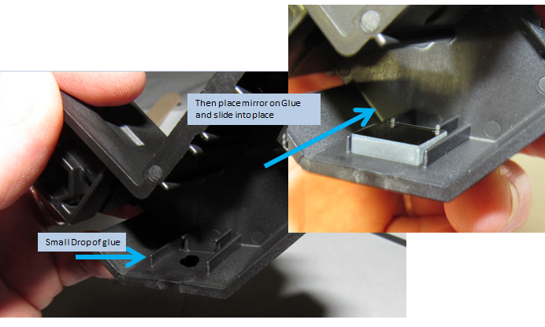Fig. 8.2 Glue the 1/2” Square Mirror to the Optic Spine
Glue the .0625 x .375 Dowel Pins in the pocket on the Optic Spine and in the pocket on the X-Y-Z Mount as shown in Fig. 8.3. Apply a small drop of Loctite 430 and use tweezers to place and separate the Dowel Pins. It is important not to allow glue to get on top of the Pins.
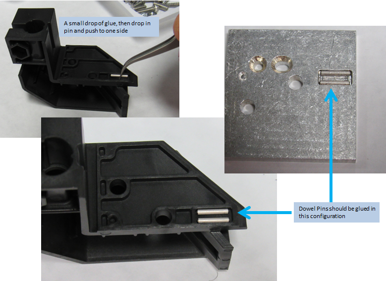Fig. 8.3 Glue the Dowel Pins to Optic Spine and X-Y-Z Mount
Glue the 1/8 x 1/4 Alloy Dowel Pin into the holes on the Optics Sub-Assembly Mount. Place a small dab of glue in each hole and insert pin to dry. Keep the area outside of the hole clean and free from glue. Fig. 8.4.
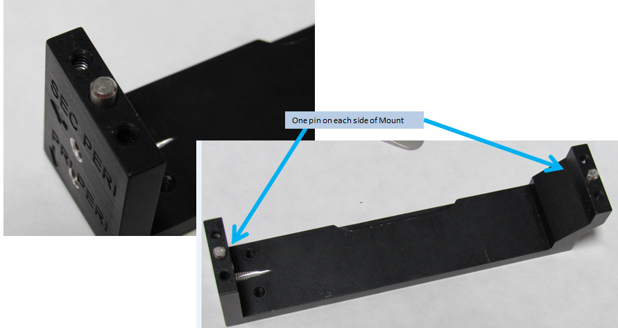Fig. 8.4 Glue the Dowel Pins into the Optics Sub-Assembly Mount
Use the 5-minute epoxy as directed to glue the Collimating Mirror to the Optic Spine. Align the mirror in the slot, with the mirror side facing the 1/2” square mirror. Dab a bit of glue on the corners. Make sure glue doesn’t run or leek to smudge the mirror. Set aside unbothered and allow for the glue to dry. Fig. 8.5.
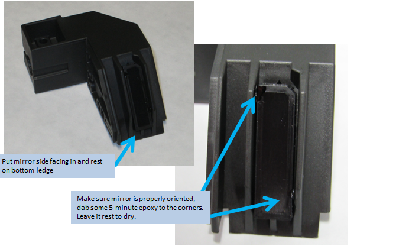Fig. 8.5 Glue the Collimating Mirror to the Optic Spine
Use the 5-minute epoxy to glue the Housing Window onto the open slot on the outside of the Optics Housing Base. Put a small dab of glue in each corner, then gently place Housing Window onto slot. Fig. 8.6.
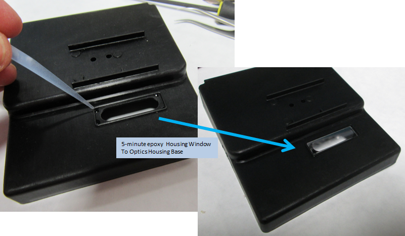Fig. 8.6 Glue the Housing Window onto the Optics Housing Base
8.2.2. Assemble Parts¶
Make sure all glue is dry and glued items are secure and properly placed before beginning this full assembly of the Optics.
Insert the 2 .112-40 .5625 Flat Head Screws into the two holes of the X-Y-Z Mount as shown in Fig. 8.7. They will remain free floating during assembly of the X-Y-Z Mount to the X-Y-Z Adaptor.
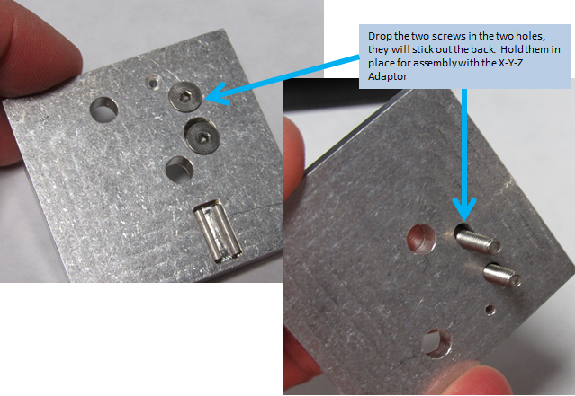Fig. 8.7 Insert the 4-40 Flat Head Screws on the X-Y-Z Mount
Place the X-Y-Z Adaptor over the flat head screws, lining up the holes as shown in Fig. 8.8.
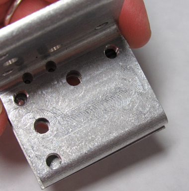Fig. 8.8 Align the X-Y-Z Adaptor to the X-Y-Z Mount
Assembly the X-Y-Z Adaptor and X-Y-Z Mount together using 2 of the Tension Springs and 4 of the .086-56 x .375 Socket Head Set Screws. Using tweezers drop the Tension Spring through the hole using the Socket Head Screw to hold up the spring. Support the Tension Spring with your finger then flip the pieces over. Use needle nose pliers or other support tools to slide the other Socket Head Screw through the other loop of the spring, securing the spring in place. Repeat with the other hole. Fig. 8.9
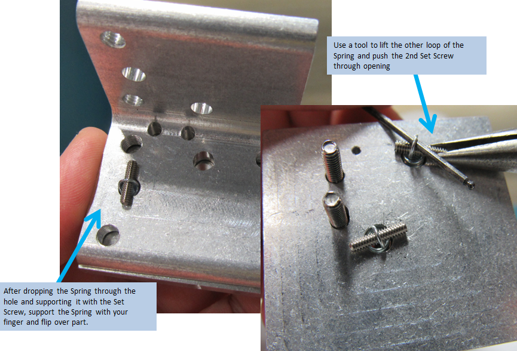Fig. 8.9 Assembly the Adaptor and Mount using the Tensions Springs and Set Screws
Place the now assembled X-Y-Z Mount and Adaptor on the Optic Spine as shown in Fig. 8.10, lining up the holes that correspond on the Optic Spine. Repeat the steps with the Set Screws and Tensions Springs to assemble the parts together. Note: it is easiest to start by dropping the 1st Spring through the hole on the inside of the Optic Spine as shown in Fig. 8.11
Insert the Cone and Oval Point Set Screws in the threaded holes on the X-Y-Z Mount as shown in Fig. 8.12

Fig. 8.12 Insert the Cone and Oval Point Set Screws as indicated
Adjust the Cone and Oval Point Set Screws so that the X-Y-Z Mount and Adaptor plate are parallel to each other and spaced about 2.5 mm apart and the Mount-Adaptor assembly is parallel and about 3 mm spaced from the Optic Spine as in Fig. 8.13. This helps set the unit up for the Calibration procedure later.
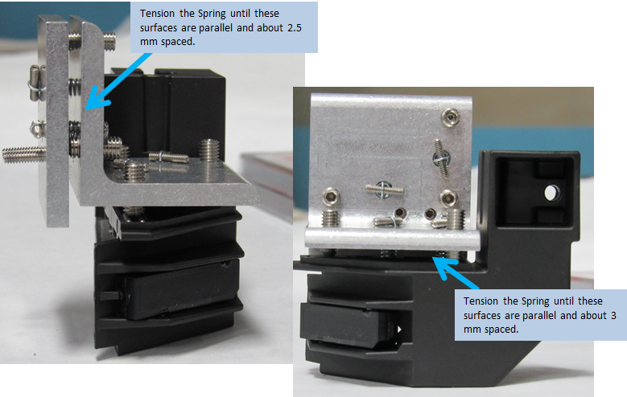Fig. 8.13 Align the Mount, Adaptor Plate and the Optic Spine
Insert the laser in the slot and insert the .138-32 x.625 Socket Head Cap Screw and .138-32 Hex Nut into the appropriate slots. Don’t worry about the laser alignment,that will be addressed during the Calibration process. Fig. 8.14

Fig. 8.14 Insert the Laser to the Optic Spine
Insert the two screws that are in the X-Y-Z Mount into the two holes in the Optics Housing Base. Fig. 8.14
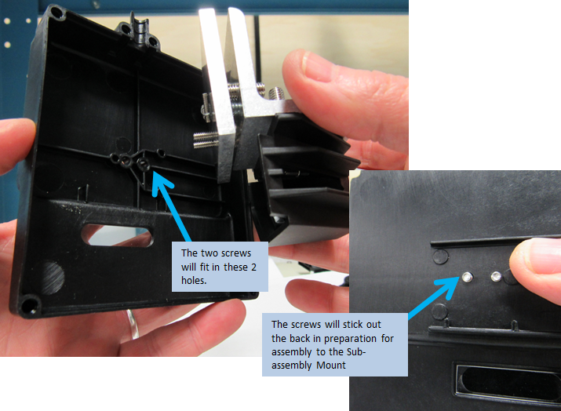Fig. 8.15 Assemble to Sub-assembly Mount Part 1
Assemble the X-Y-Z Mount and Optics Housing base to the Sub-assembly Mount. Tighten the screws using the through holes. Reference Fig. 8.16
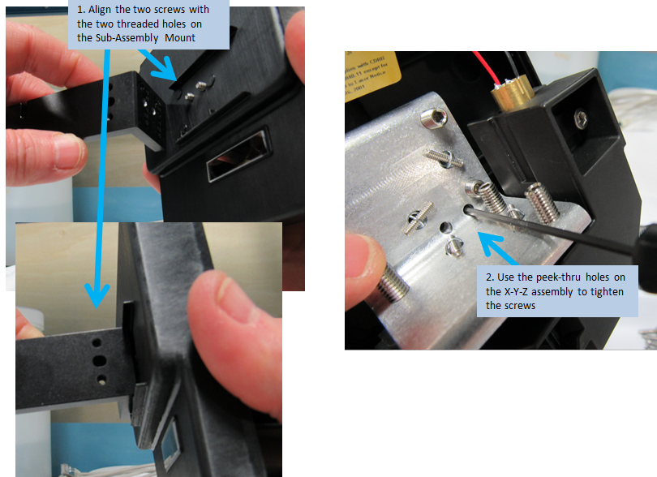Fig. 8.16 Assemble to Sub-Assembly Mount Part 2
Attach the laser power cable to the laser and align the cable with the depression in the Optics Housing Base. Fig. 8.17. The laser leads may need to be trimmed down before attaching.
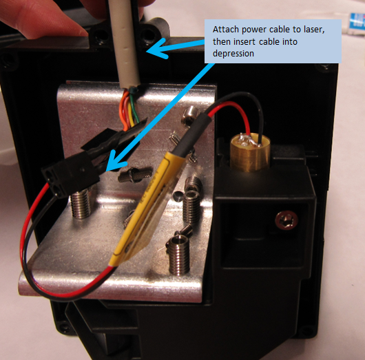Fig. 8.17 Laser power cable placement
Put the Optics Housing Cover on the Optics Housing base, keeping the Laser Power Cable in the depressions. Attach the two parts with the 6 M3.5 x 10 Thread Forming screws in each of the pre-formed holes. Fig. 8.18
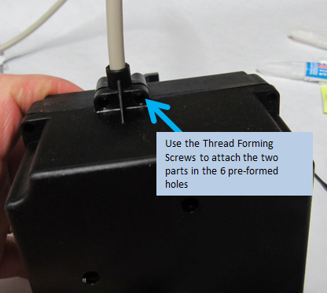Fig. 8.18 Optics Housing Assembly
The Optics Assembly should now be complete. Laser alignment will occur in the calibration Calibration section of this document.
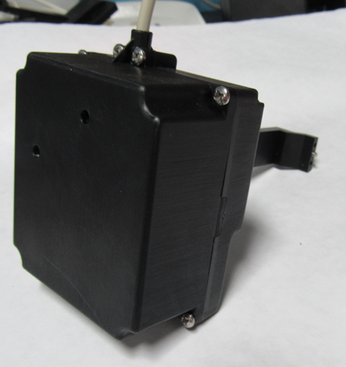Fig. 8.19 Finished Optics Housing Assembly
8.3. Detector Assembly¶
For this sub-assembly, you will need the items as listed in Table 8.2 and the associated referenced tools or supplies. In general, the items are listed in the order they will be assembled. More complete details on each item, such as part number, vendor etc., is located in the master BOM maintained here 7818-Droplet SVN\trunk\Documents\7819 DMS Master BOM.xls, and it can be downloaded here (for viewing only).
| Quantity | Description | Tools and Supplies |
|---|---|---|
| 1 | Sensor Enclosure | |
| 1 | Sensor Mount Window | 5-minute epoxy |
| 1 | #115 Rosco Rolux Filter | Filter Cutter |
| 1 | #27 Medium Red Filter | Filter Cutter |
| 1 | 0.9 OD Neutral Density Filter | Filter Cutter |
| 1 | Sensor Array / Board | |
| 1 | Cable: Control board to Sensor board | |
| 4 | Self Threading Screw 0-42 1/8” | T5 Torx Driver |
| 7 | Self Threading Screw 2-28 1/4” | T6 Torx Driver |
| 2 | SHCS .112-40 x .25 | 3/32 Hex Driver |
Fig. 8.20 Sensor Assembly Supplies
Using the 5-minute epoxy as directed, dab a little bit into each corner of the pocket on the front of the Sensor Enclosure. Place the Sensor Mount Window in the pocket and set aside undisturbed to dry. Fig. 8.21
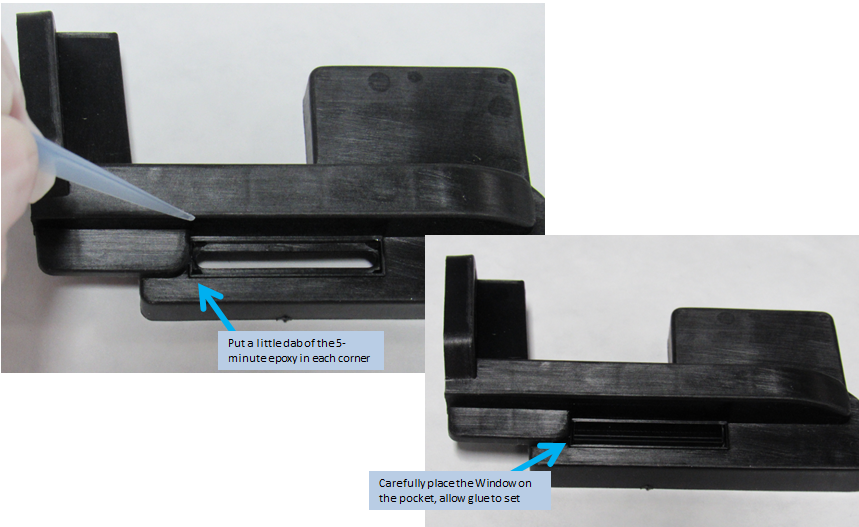Fig. 8.21 Glue the Sensor Window to the front of the Sensor Enclosure
The Sensor enclosure will require three additional filters that will need to be cut. It is best to cut a bunch at one time. Using the Die Filter Cutter and a press, stamp out at least one each of the three different types of filters: #115 Filter, #27 Filter and 0.9 OD Filter. Fig. 8.22
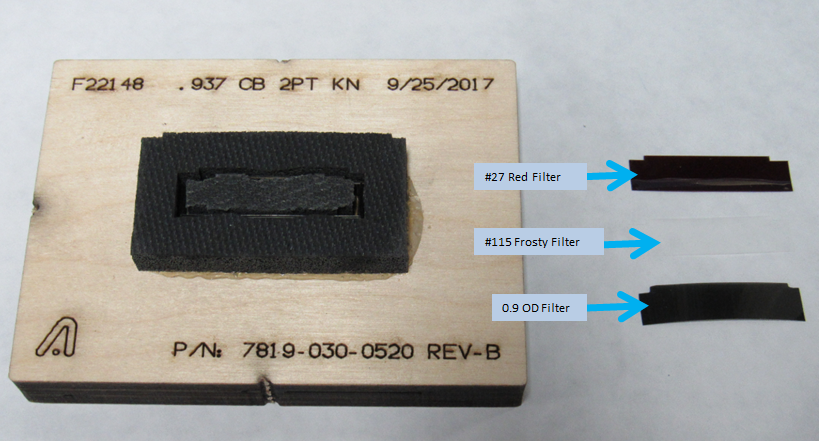Fig. 8.22 Cut the Filters using the Die and a press
On an ESD protected surface, attach the Sensor Cable to the Sensor Array Board. Fig. 8.23
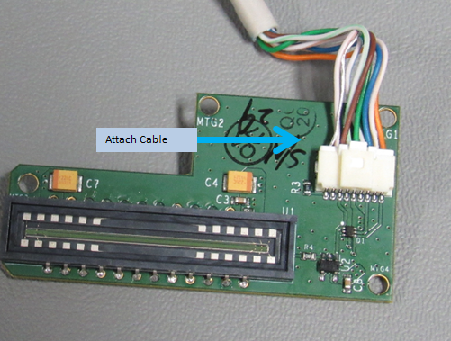Fig. 8.23 Attach the Sensor Cable to the Board
Place the 3 cut filters into the Sensor Enclosure. It is important the Frosty filter is closest to the sensor, in other words, the last filter placed. Fig. 8.24
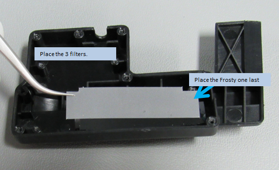Fig. 8.24 Place the three filters in the Sensor Enclosure
Lay the Sensor Array Board in the Sensor Enclosure, matching up the four pre-formed holes to the board. Attach the board with the 0-1/8” Self threading Screws. Wind the cable wires into a nice ‘S’ shape and press the cable down into the groove. Fig. 8.25
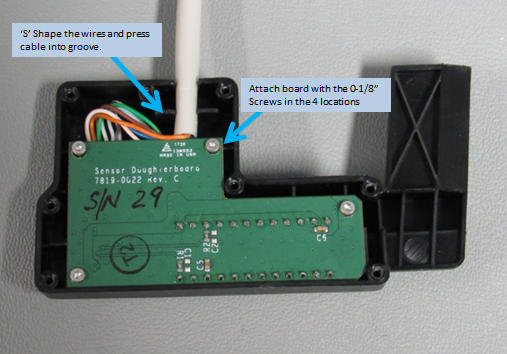Fig. 8.25 Attach the Sensor Array Board to the Sensor Enclosure
Attach the Sensor Enclosure Cover to the Sensor Enclosure using the 2-1/4” Self Threading Screws. Fig. 8.26
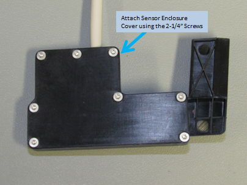Fig. 8.26 Attach the Sensor Cover to the Sensor Enclosure
Attach the Sensor Assembly to the Optics Assembly using the two 4-40 x .25 Socket Head Screws. Attach to the Sub-assembly Mount in the two threaded holes as shown in Fig. 8.27
Fig. 8.27 Attach the Sensor Assembly to the Optics Assembly
The Sensor Assembly is now complete.
Fig. 8.28 Complete Sensor Assembly with Optics Assembly
8.4. Control Assembly¶
For this sub-assembly, you will need the items as listed in Table 8.3 and the associated referenced tools or supplies. In general, the items are listed in the order they will be assembled. More complete details on each item, such as part number, vendor etc., is located in the master BOM maintained here 7818-Droplet SVN\trunk\Documents\7819 DMS Master BOM.xls, and it can be downloaded here (for viewing only).
| Quantity | Description | Tools and Supplies |
|---|---|---|
| 1 | Control Board Housing | |
| 1 | Control Board | |
| 4 | Round Head Screws 6-3/8” | Phillips Head Driver |
| 1 | Control Board Cover | |
| 7 | Round Head Screws 6-5/8” | Phillips Head Driver |
Place the Control Board in the Control Board Housing, lining up the pre-formed holes and the port for the ethernet cable. Attach the Control Board using the 6-3/8” screws. Fig. 8.29
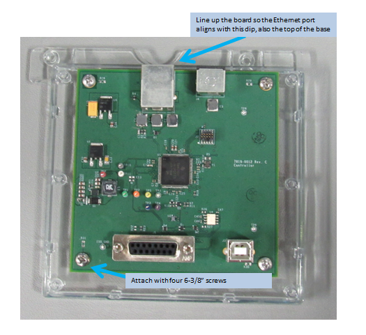Fig. 8.29 Control Board Housing
Place the Control Board Cover on the Housing, lining up the pre-formed holes for the screws and for DB15 port. Attach using the 6-5/8” screws. Fig. 8.29

Fig. 8.30 Control Board Assembly
8.5. Cables¶
This section informs of the construction of the two cables used as part of the Sensor and Optics assembly. The entire installation of the DMS requires an additional 2 cables to power the control board and connect to a computer. Those two are reviewed further in the installation section of this document.
Control Board to Laser Cable
Cut the PS/2 MDIN-6 Male to Male Cable to 20” in length and solder to a 3.5MM 2pos Terminal Block as indicated in the schematic. Then attach the 5V and Ground cable to the two lead wires on the laser. Fig. 8.31 The original cable schematic lives here: \OlympusDepartmentsElectronics_DesignPROJECTS7819-Droplet-IIReleased_Circuits7819-01xx_Cables7819-0102_Laser-PowerRev-A
Fig. 8.31 Laser Power Cable
Control Board to Sensor Board Cable
Follow the schematic located here: \OlympusDepartmentsElectronics_DesignPROJECTS7819-Droplet-IIReleased_Circuits7819-01xx_Cables7819-0103_SensorRev-A to create the Control Board to Sensor Board Cable. Fig. 8.32
Fig. 8.32 Control Board to Sensor Board Cable

{kind=link}
{kind=link}
{kind=link}
{kind=link}
{kind=link}
{kind=link}
{kind=link}
{kind=link}
{kind=link}
{kind=link}
{kind=link}
{kind=link}
{kind=link}
{kind=link}
{kind=link}
{kind=link}
{kind=link}
{kind=link}
{kind=link}
{kind=link}
{kind=link}
{kind=link}
{kind=link}
{kind=link}
{kind=link}
{kind=link}
{kind=link}
{kind=link}
{kind=link}